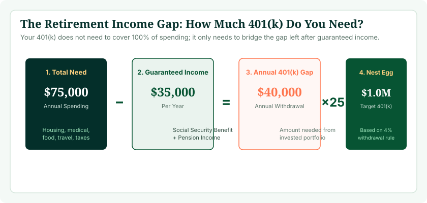
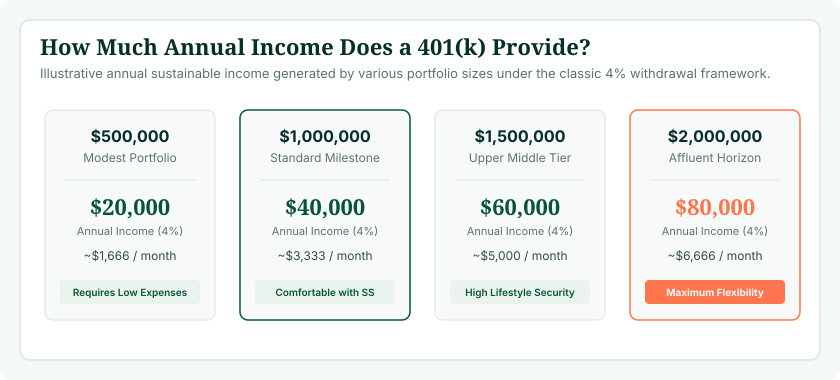

When workers ask, “How much money do I actually need in my 401(k) to retire?”, the most common answer thrown around in financial headlines is an arbitrary round number—often “$1 million” or “$1.5 million.” But a single static number makes little financial sense. A homeowner in a low-cost state with zero debt and a paid-off mortgage can retire comfortably on $500,000, while a worker renting in a high-cost coastal city may struggle on $1.2 million. The true size of your required 401(k) nest egg is dictated entirely by your annual retirement living expenses, your planned retirement age, and how much guaranteed income you receive from Social Security and other sources.
To see how your current savings, ongoing payroll deductions, and employer match compare to your retirement goals, launch our verified 401(k) Calculator. By testing different retirement ages and return scenarios, you can establish an authentic mathematical target instead of guessing.
The Core Equation of Retirement Readiness
Your required 401(k) portfolio size is governed by a simple two-step formula:
Annual Portfolio Gap = (Annual Retirement Expenses) − (Social Security + Pension Income)
Required 401(k) Nest Egg = Annual Portfolio Gap × 25 (under the 4% rule)
Every dollar of guaranteed Social Security or pension income you secure directly reduces your required 401(k) balance by $25.

Expense-Based Approach vs. Income-Replacement Approach
Retirement planners evaluate savings targets through two primary lenses:
- The Income-Replacement Method (70%–80% Rule): This conventional guideline assumes you need roughly 70% to 80% of your pre-retirement gross earnings to maintain your standard of living. If you earn $100,000, you target $75,000 in annual retirement income. It accounts for the elimination of payroll taxes (7.65% FICA), no longer saving 10%–15% for retirement, and lower work-related expenses.
- The Expense-Based Method (Cash Flow Reality): A more precise bottom-up approach that totals your actual projected expenses: housing, property taxes, food, utilities, Medicare premiums, travel, and healthcare. For workers who pay off their mortgage before retiring, actual expense replacement can drop to 55% or 60% of pre-retirement income.
The 4% Rule Explained: Connecting Income to Nest Egg
Once you identify how much income your portfolio must produce each year, how do you convert that cash flow into a total savings target? The standard institutional tool is the 4% Rule (derived from William Bengen's pioneering research and the Trinity Study).
The 4% rule states that a retiree can withdraw 4% of their balanced portfolio in their first year of retirement, and adjust that dollar amount for inflation every subsequent year, with a 95%+ probability that the portfolio will not run out of money over a 30-year horizon.
Mathematically, withdrawing 4% is equivalent to multiplying your annual portfolio need by 25 (since ( 1 div 0.04 = 25 )):
- To generate $20,000/year from your 401(k): You need $20,000 × 25 = $500,000.
- To generate $40,000/year from your 401(k): You need $40,000 × 25 = $1,000,000.
- To generate $60,000/year from your 401(k): You need $60,000 × 25 = $1,500,000.
- To generate $80,000/year from your 401(k): You need $80,000 × 25 = $2,000,000.

Target Nest Egg Matrix: Annual Spending vs. Social Security
The table below shows the required 401(k) nest egg across different lifestyle spending targets, assuming an individual or couple receives $24,000, $36,000, or $48,000 in combined annual Social Security benefits:
| Desired Annual Living Expenses | Social Security: $24,000/yr | Social Security: $36,000/yr | Social Security: $48,000/yr |
|---|---|---|---|
| $50,000 / year | $650,000 Nest Egg | $350,000 Nest Egg | $50,000 Nest Egg |
| $70,000 / year | $1,150,000 Nest Egg | $850,000 Nest Egg | $550,000 Nest Egg |
| $90,000 / year | $1,650,000 Nest Egg | $1,350,000 Nest Egg | $1,050,000 Nest Egg |
| $110,000 / year | $2,150,000 Nest Egg | $1,850,000 Nest Egg | $1,550,000 Nest Egg |
| $130,000 / year | $2,650,000 Nest Egg | $2,350,000 Nest Egg | $2,050,000 Nest Egg |
Notice how significantly Social Security reduces your 401(k) burden. For a household spending $70,000 annually, receiving $36,000 from Social Security drops the required 401(k) portfolio from $1,750,000 down to $850,000—a nearly $900,000 savings difference.
Calculate Your Exact Retirement Number
Input your current salary, age, and savings details to see when your 401(k) will reach your target nest egg.
Launch 401(k) Calculator →How Retirement Age Radically Changes Your Target
Your planned retirement age affects your target nest egg across three dimensions: portfolio longevity, Social Security entitlement, and healthcare coverage.
Retiring at Age 55 vs. Age 62 vs. Age 67
- Retiring at Age 55 (Early Retirement): Requires funding a 35-to-40-year retirement. You face a 7-year gap before you can claim Social Security (at 62) and a 10-year gap before Medicare begins (at 65). Prudence dictates a lower withdrawal rate (3.25% to 3.5%), requiring a 28x to 30x nest egg multiple.
- Retiring at Age 62 (Early Social Security): Social Security is available, but claiming at 62 permanently reduces your monthly check by 30% compared to Full Retirement Age. You must bridge 3 years of private health insurance until age 65.
- Retiring at Age 67 (Full Retirement Age): You receive 100% of your primary Social Security benefit, Medicare is already in place, and your portfolio only needs to support a 20-to-25-year horizon. A standard 4.0% withdrawal rate (25x multiple) is fully robust.
To evaluate how claiming age impacts your monthly checks, use our Social Security Age Calculator to model the financial trade-offs between claiming at 62, 67, or delaying to age 70.

The Decisive Role of Social Security: The Age 70 Super-Strategy
One of the most effective strategies for reducing your required 401(k) savings is delaying Social Security until age 70. For every year you delay claiming beyond Full Retirement Age (67), your benefit earns an 8% delayed retirement credit, topping out at 124% of your full benefit at age 70.
Consider a worker eligible for $2,200/month ($26,400/year) at age 67. If they claim early at 62, their benefit drops to $1,540/month ($18,480/year). If they wait until 70, their benefit grows to $2,728/month ($32,736/year). That $14,256 annual difference in guaranteed income translates to a $356,400 reduction in required 401(k) savings under the 4% rule. Tapping your 401(k) to bridge expenses between ages 65 and 70 allows your Social Security benefit to compound at an effective guaranteed 8% real rate.
Healthcare Costs and Medicare in Retirement
A major blind spot in nest egg planning is healthcare. Fidelity's annual retiree healthcare survey estimates that an average 65-year-old retired couple will need approximately $315,000 to $330,000 (in today's dollars) throughout retirement to cover out-of-pocket medical expenses, Medicare Part B and Part D premiums, supplemental Medigap policies, and dental/vision care.
Medicare is not free. In 2026, standard Part B premiums, deductibles, prescription copays, and long-term care insurance require budgeting at least $600 to $900 per month per couple. Ensuring your retirement spending plan includes a dedicated healthcare buffer protects your core portfolio from unexpected medical drawdowns.
Taxes on 401(k) Withdrawals: Traditional vs. Roth
When calculating your nest egg, remember that not all dollars are created equal:
- Traditional 401(k): Every withdrawal is taxed as ordinary income at your marginal federal and state tax rates. If you withdraw $50,000 from a Traditional 401(k) at an effective 15% tax rate, you only receive $42,500 in spendable cash. You must save approximately 15% to 20% more in a Traditional 401(k) to cover tax liabilities.
- Roth 401(k): Qualified withdrawals are 100% federal- and state-tax-free. A $50,000 distribution provides exactly $50,000 in spendable income.
Maintaining a blend of pre-tax Traditional 401(k) and tax-free Roth assets gives you tax flexibility in retirement, allowing you to manage your tax brackets and minimize Medicare premium surcharges (IRMAA).
What If You Haven't Saved Enough? Four Practical Levers
If you calculate your retirement target and find a daunting shortfall, you have four highly effective levers to balance the equation:
- Lever 1 — Work Two to Three Extra Years: Delaying retirement from 64 to 67 does wonders: it allows your portfolio to compound without withdrawals, lets you contribute three more years of catch-up funds, and permanently increases your Social Security benefits.
- Lever 2 — Downsize Housing or Relocate: Housing is typically a retiree's single largest expenditure. Downsizing or relocating to a state with no income tax or lower property taxes can cut annual spending by $15,000 to $25,000, immediately reducing your required portfolio by $375,000 to $625,000.
- Lever 3 — Earn Supplemental "Barista" Income: Working part-time or consulting to earn just $12,000 to $18,000 per year during your first five years of retirement removes huge withdrawal pressure from your 401(k), giving your investments time to recover from market dips.
- Lever 4 — Adopt a Dynamic Withdrawal Strategy: Instead of taking a rigid 4% every year, flexible retirees take 3.5% during market down years and 4.5% during bull markets, significantly extending portfolio longevity on a smaller starting nest egg.
Step-by-Step: How to Determine Your Exact 401(k) Target
Follow this 5-step checklist to finalize your personal retirement target:
- Estimate Desired Retirement Spending: Tally your baseline living expenses plus discretionary travel/hobbies (e.g., $65,000/yr).
- Log Your Social Security Benefit: Check your official SSA.gov statement to find your estimated monthly benefit at age 62, 67, and 70 (e.g., $28,000/yr).
- Calculate the Net Portfolio Gap: $65,000 − $28,000 = $37,000 annual gap.
- Apply Your Withdrawal Multiple: Multiply $37,000 × 25 = $925,000 Target Nest Egg.
- Map Your Accumulation Path: Use our 401(k) Calculator to determine how much you must save each month to reach $925,000 by your target retirement age.
Frequently Asked Questions
How much do you need in a 401(k) to retire?
Your target depends on your living expenses. Calculate your annual spending, subtract Social Security and pensions, and multiply the remaining gap by 25 under the 4% rule. A $40,000 gap requires $1,000,000; a $20,000 gap requires $500,000.
Is $1 million enough to retire comfortably?
Yes, for many households. Under the 4% rule, $1 million provides $40,000 annually. Combined with $24,000 to $28,000 in Social Security, total household income reaches $64,000 to $68,000, which comfortably supports a mortgage-free retirement.
How does the 4% rule work for retirement withdrawals?
The 4% rule allows you to withdraw 4% of your initial portfolio value in year one of retirement and adjust that dollar amount annually for inflation, ensuring a 95%+ probability that your savings last 30 years.
How much do I need to retire at age 60 vs age 65?
Retiring at 60 requires a larger nest egg because your portfolio must fund a 35-year horizon, Social Security cannot be claimed until 62, and you must self-fund healthcare until Medicare at 65.
How does Social Security affect how much I need in my 401(k)?
Social Security provides guaranteed inflation-adjusted income. Every dollar received from Social Security reduces your required 401(k) portfolio by $25 under the 4% rule.
How much income can a $500,000 401(k) provide in retirement?
Under the 4% rule, $500,000 generates $20,000 per year ($1,666/month) before taxes. Combined with an average Social Security benefit of $24,000, total retirement income is $44,000 per year.
Are 401(k) withdrawals taxed in retirement?
Traditional pre-tax 401(k) withdrawals are taxed as ordinary income at your marginal tax rate. Qualified Roth 401(k) withdrawals are completely tax-free.
What percentage of my pre-retirement income do I need to replace?
Financial planners recommend replacing 70% to 80% of pre-retirement gross earnings. You need less than 100% because payroll taxes stop, retirement savings contributions end, and work expenses vanish.
What can I do if I am 55 and do not have enough saved?
Use IRS catch-up contributions, plan to work until age 67 or 70 to maximize Social Security, downsize housing, and eliminate consumer debt before retiring.
How does inflation impact my retirement nest egg need?
Inflation erodes purchasing power over 30 years. Maintaining 40% to 60% equities in your retirement portfolio ensures capital growth continues to outpace rising prices.
How can I calculate my exact 401(k) accumulation path?
Use our interactive 401(k) Calculator to test your salary, savings rate, and timeline to project exactly when your portfolio reaches your required retirement number.